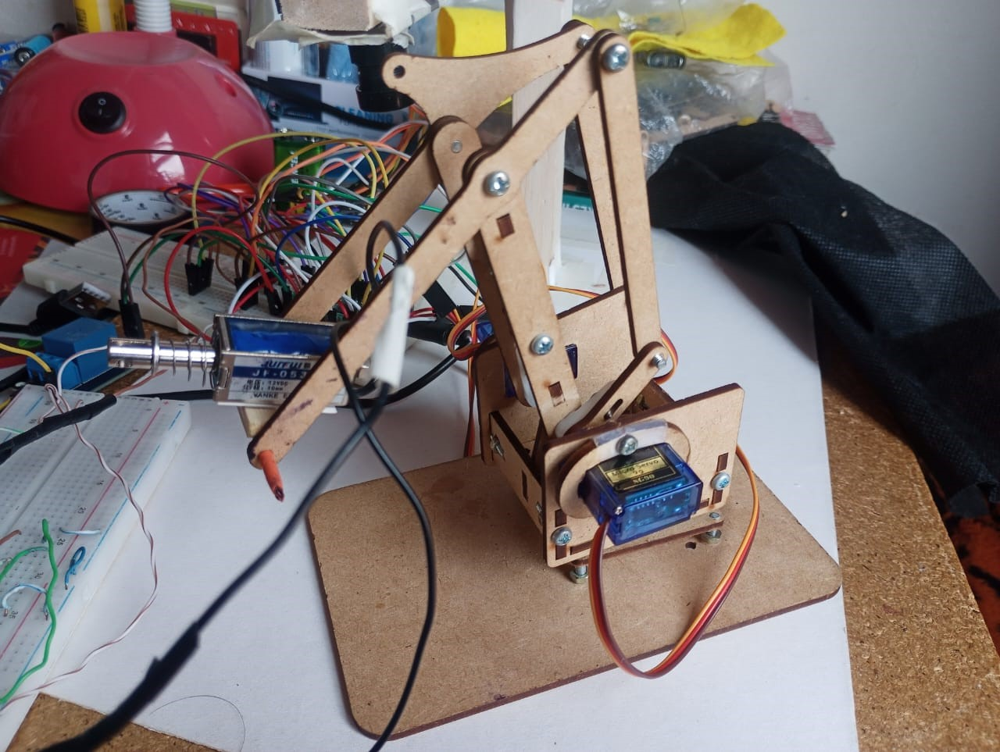
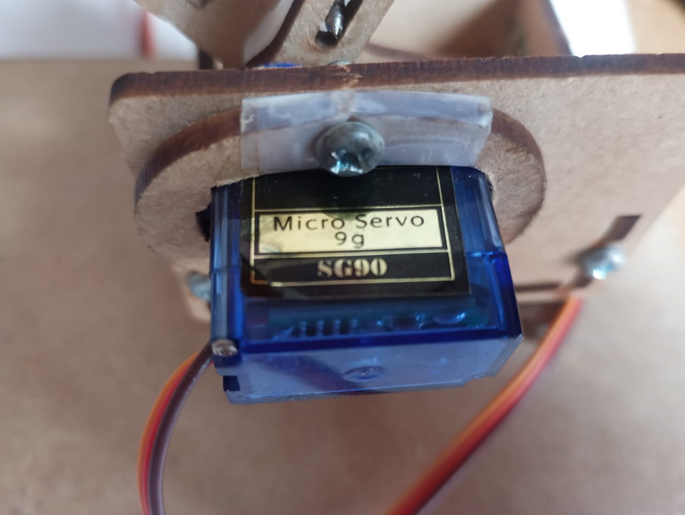
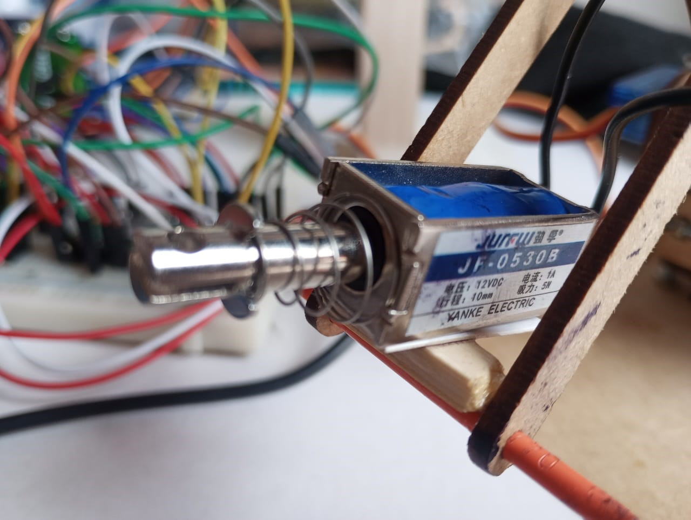

Daniel Camilo Escobar Roa - 20222005035
Santiago Chapeton Karabadjakof- 20222005057
Este proyecto consiste en un brazo robótico que puede detectar objetos con una cámara y moverse automáticamente hacia ellos. Para lograrlo, usamos servomotores y un sistema de control por Wi-Fi, permitiendo que el brazo reaccione sin intervención manual.
En este documento, explicamos cómo funciona el brazo, qué materiales usamos y cómo se podría aplicar en el futuro. También incluimos un manual con enlaces al control remoto, el gemelo virtual y videos que muestran su funcionamiento. Además, desglosamos el código en sus diferentes partes, desde el control de los servos hasta la detección de objetos y los movimientos del brazo.
Por último, mencionamos algunas mejoras que se pueden hacer y dejamos un enlace al video de presentación del proyecto.



El proyecto del brazo robótico ha funcionado correctamente, logrando ejecutar las tareas esperadas. Sin embargo, hay varios aspectos que pueden mejorarse tanto en el código como en la estética del diseño.
En cuanto al software, aunque el código es funcional y efectivo, sería conveniente optimizar su estructura para que sea más claro y fácil de mantener. Además, no logramos implementar la pantalla OLED ni las curvas de Bézier, dos elementos que habrían mejorado la visualización de datos y la suavidad en los movimientos del brazo.
Por otro lado, la estética del brazo también es un aspecto a mejorar. Aunque cumple su propósito, un diseño más refinado ayudaría a que el proyecto luzca más profesional y organizado.
A pesar de estos puntos pendientes, el desarrollo del proyecto fue una gran oportunidad de aprendizaje, permitiéndonos mejorar nuestras habilidades en Python y en el control de servomotores a través de Wi-Fi. En futuras versiones, nos enfocaremos en pulir estos detalles para lograr un sistema más completo y eficiente.